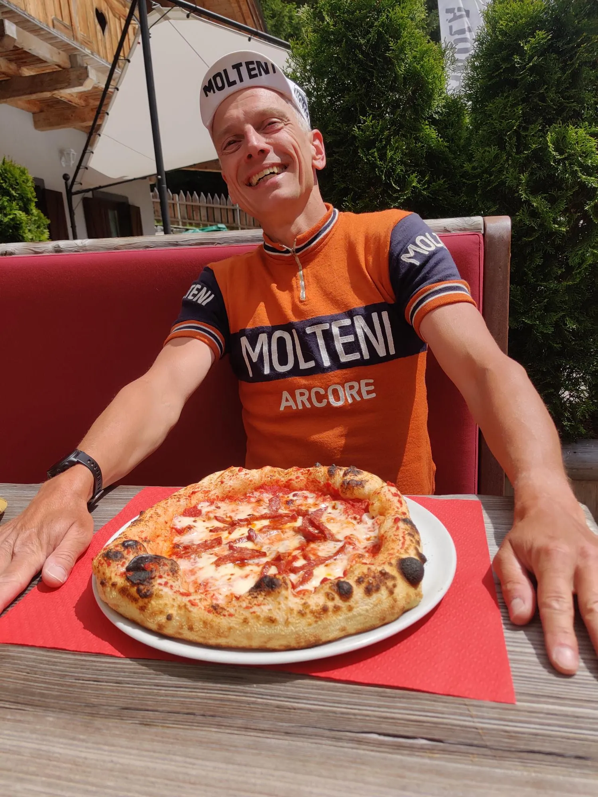
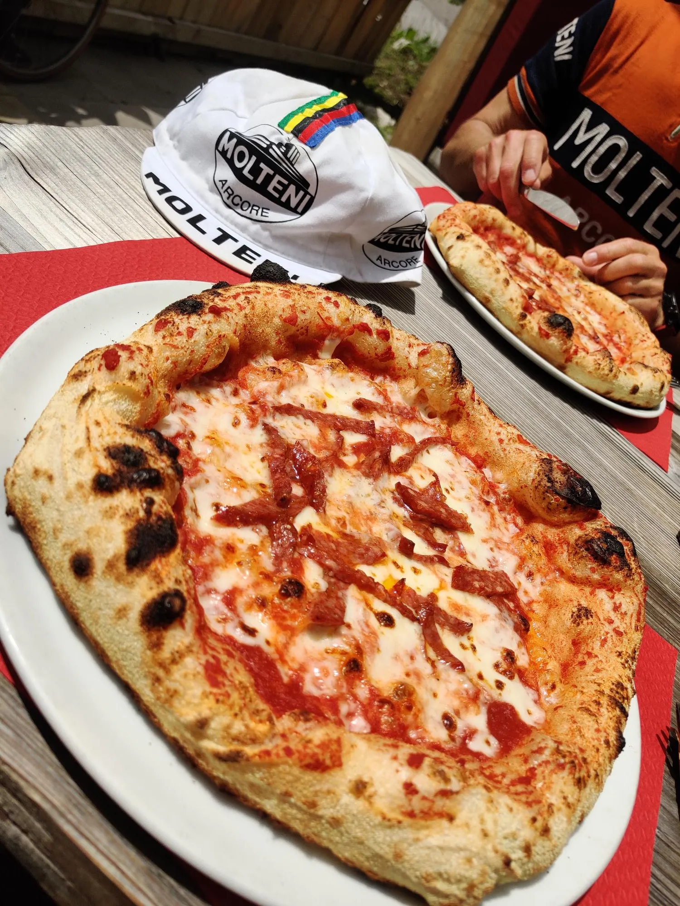
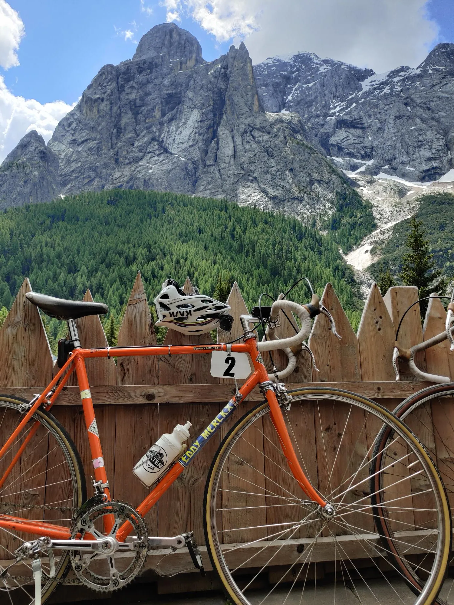
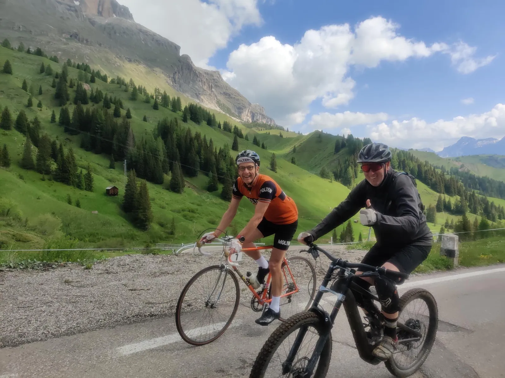

Nedtælling til Lombardiet Revenge Tour 1973 – Afrulning i højdetræningslejren.

Forberedelserne er slut. Boet kan gøres op…
Torsdagens træningspas på 95 km og 2600 hm var det sidste i Dolomitterne for denne gang. I store træk en kopi af gårsdagens tur, bare den modsatte vej rundt. Igen over billedskønne Passo Fedaia, men i dag fra den mere humane side fra Canazei, hvor stigningsprocenterne ikke kommer meget over 10. Det kan klart anbefales. Ikke mindst fordi højhastighedsnedkørslen forbi Malga Ciapela er helt outstanding.
Således blev Leegaard revet så meget med af stemningen og den søde musik af fartvinden i 36-egers hjulene, at han helt glemte kaptajnens formaninger og rundede 90 km/t før fælgbremsen kælent blev doseret.
Ligeledes havde Blume vist også glemt weekendens skriveøvelse. Der blev savet kulfiber fra en kant både op og ned.
Men – på en afrulningsdag er alt tilladt og før toppen indtog vi en fantastisk frokostpizza i bløde sæder, i solen på La Maison Fredarola, smilende serveret af en lokal trunte med mere filler i læberne end der er smat i et moderne tubeless racerdæk.


At der samtidigt kørte et indsmigrende lounge-café-soundtrack på etablissementets højttalere, af den slags hvor store klassiske pophits bliver omkalfatret til nærmest ukendelighed, gjorde kun kontrasten til den overdådigt ærlige og brutalt bjergtagende omgivende natur så meget større.

Tilbage på vejen blev vi best mates med John fra New Zealand. Hvad ellers kan man stille op med en kiwi, der rejser til Europa for at se cykelløb og køre berømte stigninger. Så nu er Squadra Molteni inviteret til NZ for at flashe noget stål.

Først venter dog Como, Molteni-familien og Lombardiet Revenge Tour 1973.
Stay tuned…